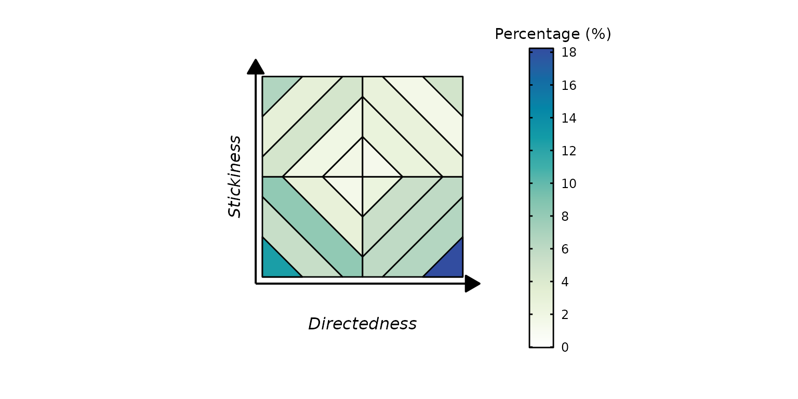
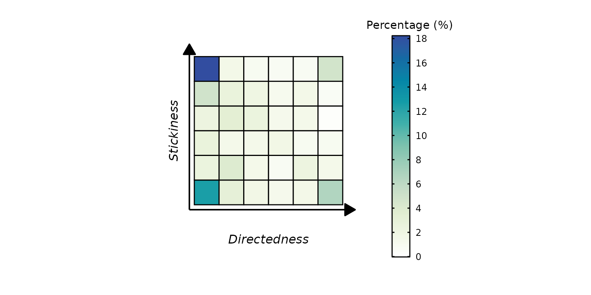
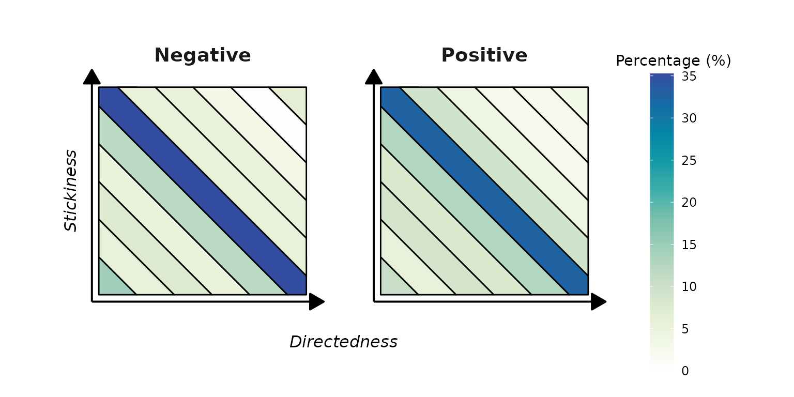
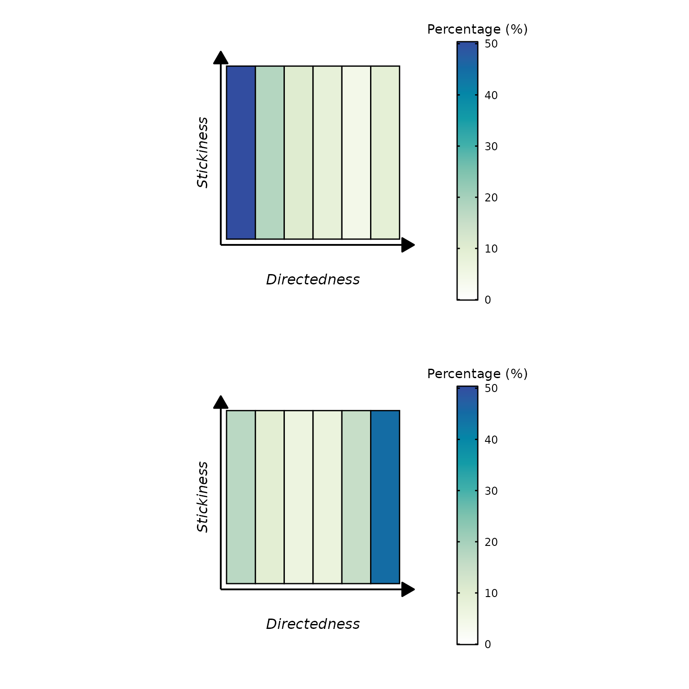

library(ThinkingGrid)
library(gridExtra)
data_file <- system.file("extdata", "sample_data.csv", package = "ThinkingGrid")
tg_data <- read.csv(data_file)
knitr::kable(head(tg_data))| id | condition | probe | dc | ac | valence |
|---|---|---|---|---|---|
| 0 | Negative | 1 | 6 | 1 | -1 |
| 0 | Negative | 2 | 4 | 3 | -1 |
| 0 | Negative | 3 | 3 | 3 | 0 |
| 0 | Negative | 4 | 4 | 5 | 0 |
| 1 | Negative | 1 | 5 | 1 | -2 |
| 1 | Negative | 2 | 5 | 1 | -2 |
Overall Plots
The plot_tg function is used to visualize the results of
a Thinking Grid analysis. To use this function, all you need is a
dataframe containing one column that has deliberate constraints and
another containing automatic constraints. In the dataset illustrated
above, dc represents the deliberate constraints and
ac represents the automatic constraints and need to be
passed as characters to the dc_column and
ac_column parameters respectively. When using default
arguments, the type parameter is set to
"depth".
simple_depth <- plot_tg(
tg_data,
dc_column = "dc",
ac_column = "ac"
)
simple_depth$plot
The type parameter can be set to one of six parameters:
"cells", "quadrants",
"horizontal", "vertical",
"constraints", and "depth" (default).
simple_constraints <- plot_tg(
tg_data,
type = "cells",
dc_column = "dc",
ac_column = "ac"
)
simple_constraints$plot
Condition plots
Separate Plots
The plot_tg function allows the user to plot separate
plots using a condition column present within the dataset. To use this
functionality, set the proportion_type argument to
"condition" (default is "overall" and will
plot the overall proportions as shown in examples above). The
condition_column argument needs to be populated with
character representing the column name. The number of plots created will
be equal to the number of conditions present within this column.
condition_separate <- plot_tg(
tg_data,
type = "constraints",
proportion_type = "condition",
dc_column = "dc",
ac_column = "ac",
condition_column = "condition"
)
condition_separate$plot
If the number of conditions is exactly equal to two, the two plots will be plotted side by side similar to the example above. However, if the number of conditions is greater than two, separate plots will be returned for each condition. In the illustration below, the column valence has five possible values. The code will return five ggplot objects, one for each unique condition, which can be retrieved using the name of that condition. We have highlighted how to retrieve plots for valence == 0 and valence == -2.
condition_separate2 <- plot_tg(
tg_data,
type = "vertical",
proportion_type = "condition",
dc_column = "dc",
ac_column = "ac",
condition_column = "valence"
)
condition_separate2_val0 <- condition_separate2$plot$`0`
condition_separate2_val2 <- condition_separate2$plot$`-2`
grid.arrange(condition_separate2_val0, condition_separate2_val2, ncol = 1)
Difference Plots
Another way of visualizing the data is available when the number of
conditions is exactly two. If the proportion_type is set to
"condition", the comparison_type parameter
could be indicated as "difference" (default is
"separate" which generates the plots above). This
visualization essentially depicts how much of a shift have people made
across the two conditions.
condition_difference <- plot_tg(
tg_data,
proportion_type = "condition",
comparison_type = "difference",
dc_column = "dc",
ac_column = "ac",
condition_column = "condition"
)
condition_difference$plotIt can be the case that extreme values in the difference
distributions are sparse. For example, maybe in the example above, a
difference percentage of 4% only appears once; whereas most of the
values lie between negative two to two. In such instances, the color
palette overly emphasizes these extreme values, while compressing the
majority of data points which could potentially be of more interest.
Three parameters can be used to correct for this. First, the
gradient_scaling argument must be set to
"enhanced". The enhanced_threshold_pct
controls what percentage of data must be enhanced in the color palette,
default is 50. Essentially it’s telling the code what proportion of the
data you have provided you’d like to enhance. The
enhanced_expansion_factor is how much you’d like
the selected area to be enhanced by (default=1.5). In simple terms, the
function will compress the color palette in such a way that the bottom
50% of the data will get more colors (with a factor of 1.5) enhancing
the variability of this region, making it easier for readers to pick up
minute differences.
condition_difference2 <- plot_tg(
tg_data,
proportion_type = "condition",
comparison_type = "difference",
dc_column = "dc",
ac_column = "ac",
condition_column = "condition",
gradient_scaling = "enhanced",
enhanced_threshold_pct = 40,
enhanced_expansion_factor = 2,
)
condition_difference$plot
Creating GIFs
There might be instances where users want to visualize the
progression on the thinking grid based on a condition. In our dataframe,
we want to visualize how reports on the thinking grid change across
different levels of valence (-2 to 2). The
create_tg_animation function can assist with this. Similar
to the plot_tg function, it expects a dataframe,
dc_column, ac_column, and
condition_column. If condition column is numeric, it will
output the GIF by first sorting on condition in an ascending manner. In
our example, the output will start from negative two and end at two. The
file will be saved and its name can be altered using
filename parameter (default:
tg_animation.gif).
create_tg_animation(
tg_data,
proportion_type = "condition",
dc_column = "dc",
ac_column = "ac",
condition_column = "valence",
filename = "example_gif.gif"
)